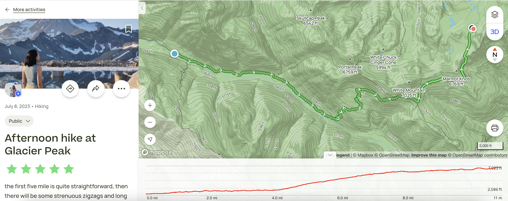
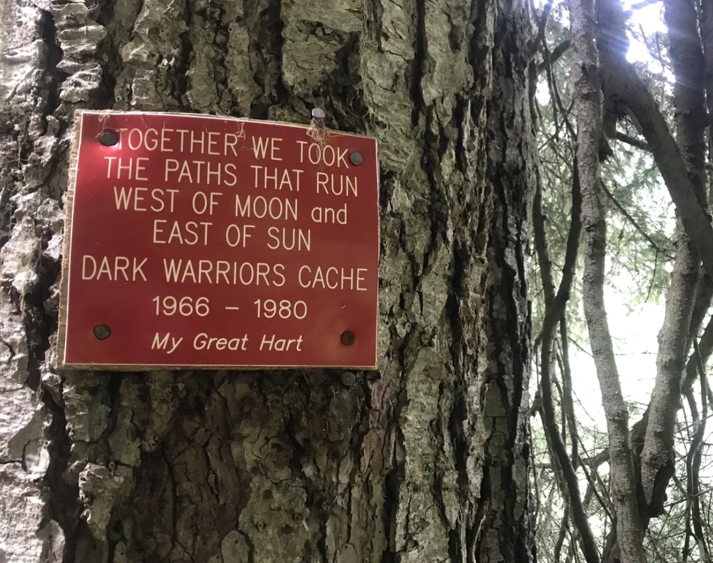

Glacier Peak Backpacking Trip
Recounting a memorable two-day backpacking adventure to Glacier Peak's high camp, filled with scenic trails, a stunning reflection lake, and detailed notes on gear and the experience.
Glacier Peak 快乐大包行游记 7 July - 8 July
初相见, 如此惊艳.
绕过了白山(White Mountain)和土拨鼠土坡(Marmot Knob), 徒步10英里后才看到这个躲猫猫的Glacier Peak的笑颜. 这么近, 又是这么远. 每一次开车回家路上, 在Lake City Way的某一个特定的角度可以远眺Glacier Peak, 许多次告诉自己: 山就在那里, 我想朝她走去.
今年的国庆节周末, 我们周六早上四点早早起床, 驱车两个半小时来到了徒步步道入口. 车程时间可以接受, 路况大部分情况良好, 最后40分钟路上有局部大坑, 小心驾驶的话低底盘的车还是可以安全通过. 这次是我的拉连局, 我负责开了最后一小时的车.
从步道入口走到high camp露营处单程是大概13英里. 刚开始的5英里走得非常闲适, 一度让我觉得穿越回了enchanted valley, 在许多毛毛树里穿梭, 踏着香软的松木步道, 穿过red creek camp边上的独木桥. 一路上感觉很顺利, 在“小瑞士”风格的羊肠小道上迎着风欢快得走着, 看见身旁有可以采撷的salmon berry, 溪水旁有飞舞的冰蓝色蝴蝶, 当时26磅的大包也觉得没问题! 能走! 中午还吃上了豪华午饭(一管香蕉, 一盒车厘子, 一个能量棒), 直到走到了PCT的交汇点.
后面大概5英里局部比较困难, 有看到清晰的snow bridge雪桥, 底下真真切切是空的! 我们尽量沿着前人的脚印快速通过✅. 快到营地的最后2英里比较疲惫, 有不少陡然上升和陡然下降, 还有比较容易滑的沙路, 心里在想怎么绕了这么久还没有结束啊! 山怎么离我还是这么遥远! 最后一段还需要走20分钟雪路, 先下降一点再爬上一个高坡, 到达high comp 6,500‘ 附近.
下午四点左右的太阳还是很烈, 我们赶紧把帐篷搭好了就开始躲进去午觉休息, 帐篷门外就正正对着南向的Glacier Peak. 我开心得喝着我的苹果果汁汽水, 背它上了high camp太不容易!! 晚上七点多的时候, 天还是特别亮, 我们开始做饭, 煮了红烧牛肉面(多加一个面饼加加餐!)和一份山房子(mountain house黑椒牛肉饭), 配一盒小胡萝卜. 之后发现了属于Glacier Peak的reflection lake, 山的倒影静静地映在一个季节性湖泊之上, 没有一点水波纹, 配上夕阳西下的golden hour, 我可得马上造型整上, 开始拍照. 玩到晚上九点也累, 天还是没有暗下来, 连头灯也没有用上就睡去了.
第二天醒来时已经7点多了! 第一次外出背包行睡得如此香甜, 头灯还是没有用上, 太阳已经特别晒了. 我们吃了另一包红烧牛肉面和黑芝麻糊后就开始往前走走, 看到了white chuck glacier, 看上去特别温柔缓和(但不知道是不是真的温柔哈哈, 还是背后有险峻的地形?) 上午8点50分, 我们拔营开始往下撤退. 一路猛冲, 走了7英里后才第一次停下来在shelter区域下包休息, 补充食物. 下午3点15分正式出山, 完美结束Glacier Peak的high camp露营两天一夜之旅.
 Glacier Peak Trail Map
[我的大包配置]总重量12KG (26磅):
食物和水: 水2L, 苹果果汁0.5L, 两个能量棒, 两颗糖果, 三包小杏仁, 一包小花生 (不建议背太多水, 沿途水源是充足的, 开始的5英里每隔1英里有取水点, 营地附近也有清澈湖水. 我背的食物较少, W总是高山厨师, 负责管放饭)
背包客四大件儿: 双人牧高笛帐篷(2.25kg), ULA Circuit背包, Therm-a-Rest Z Lite Sol Camping and Backpacking Sleeping Pad睡垫, 睡袋Sleeping quilt - Enlightened Equipment Revelation(Down Type: 950, Temperature: 20°F)
- 大力表扬这一款睡袋, 从来没有睡得这么暖和, 这么香.
- 未来计划: 需要更新我的帐篷和睡垫, 睡垫R值过低, 睡觉的时候总想要翻身, 腰背部比较硌. 帐篷功能确实很喜欢, 但是自身过重了, 希望可以使用钞能力减低负重(走得更高更远!)
重要杂物 (尽量放在容易拿到的地方): 安耐晒防晒霜, 太阳眼镜, Invisalign牙套盒子, Katadyn BeFree 1.0L 滤水器, 防虫喷剂bug spray, 爬山坐垫Therm-a-Rest Z Seat Cushion Insulated Sitting Pad, 六神蚊虫叮咬后的止痒走珠液.
其他背负物品(放于背包内): 炊具(气罐+打火机), 小冰爪(micro spikes), 巴塔哥尼亚nano puff中层衣(s), 始祖鸟Zeta LT防风外壳, 牧高笛头灯, First aid kit, 手套, Hyperlite Mountain Gear (HMG)小腰包, 牙刷牙膏牙杯, 厕纸, 卫生巾(女生), 垃圾袋(zip bag), 多一双羊毛袜子, 睡裤, 多一套替换的速干衣和登山速干裤, 洗脸巾.
- 大力表扬带了洗脸巾, 到了营地沾沾水可以给自己擦擦土灰色的身子, 抹抹脸, 特别舒服.
爬山穿搭: 西雅图凌峰社社服速干短袖(白色黑字), Lululemon遮阳帽, OR防虫帽, 优衣库legging和运动背心, Hoka Anacapa Mid GTX Hiking boots登山鞋，登山杖(trekking poles), smart wool中等长度羊毛袜, Apple watch 7 (45mm),
- Apple watch 7 掉电也太快了, 不到10英里就已经没电了. 需要更新我的运动手表了!
- 大力表扬Hoka Anacapa Mid GTX Hiking boots登山鞋, 走过了27英里的脚是不疼的, 是没有水泡的.
今晚在网上冲浪的时候无意间看到了有一首写在这条徒步步道上的诗, 相传是有挪威神话的典故(”West of Moon and East of Sun” ）
 The West of Moon and East of Sun, happen to find this poem on a random tree on the trail.